Color themes
The “color.theme” object provides two color-generating functions:
palette() and ramp(). The
palette() function accepts an integer
and returns a vector of
discrete colors. It is primarily intended for
qualitative themes, where distinct colors are used to
represent categorical data. The ramp() function accepts a
numeric vector
with values in the
interval and returns a vector of corresponding colors. It maps numeric
values onto a continuous color gradient, making it suitable for
sequential and diverging themes.
Pre-defined themes
You can get a pre-defined “color.theme” object by providing a theme
name to the color.theme() or get.color.theme()
functions.
library(midr)
library(ggplot2)
library(gridExtra)
# diverging color theme "nightfall" (package:khroma)
nightfall <- color.theme("nightfall")
print(nightfall)
#> Diverging Color Theme : "nightfall"
nightfall$palette(5)
#> [1] "#125A56" "#60BCE9" "#ECEADA" "#FD9A44" "#A01813"
#> attr(,"missing")
#> [1] "#FFFFFF"
nightfall$ramp(c(0.00, 0.25, 0.50, 0.75, 1.00))
#> [1] "#125955" "#5FBBE9" "#EBEAD9" "#FD9944" "#9F1813"
# sequential color theme "viridis" (package:viridisLite)
viridis <- color.theme("viridis")
print(viridis)
#> Sequential Color Theme : "viridis"
nightfall$ramp(c(0.00, 0.25, 0.50, 0.75, 1.00))
#> [1] "#125955" "#5FBBE9" "#EBEAD9" "#FD9944" "#9F1813"
viridis$ramp(c(0.00, 0.25, 0.50, 0.75, 1.00))
#> [1] "#440053" "#3B518B" "#21908C" "#5CC862" "#FDE625"You can modify themes by reversing the color order or changing the theme type (e.g., from sequential to qualitative). These changes can be applied in two ways:
-
Using Arguments : provide the appropriate argument
to the function, such as
reverse = TRUEortype = "qualitative". -
Using Suffixes : for convenience, you can append a
suffix directly to the theme’s name.
_rto reverse the theme,@q(or longer, such as@qual) to make the theme qualitative (@dfor diverging,@sfor sequential).
plot(color.theme("nightfall", reverse = TRUE),
text = "khroma/nightfall_r")
plot(color.theme("nightfall", type = "qualitative"),
text = "khroma/nightfall@qual")
plot(color.theme("viridis_r",),
text = "viridisLite/viridis_r")
plot(color.theme("viridis@qual"),
text = "viridisLite/viridis@qual")
When multiple packages provide a theme with the same name (e.g., “Paired”), you must specify which one to use. You can do this in two ways:
-
Using Argument : provide the package name to the
sourceargument (e.g.,source = "grDevices"). -
Using Prefix : append a prefix to the theme name
with the package name and a forward slash (e.g.,
"RColorBrewer/Paired").
# qualitative color theme "Paired" (package:grDevices)
paired <- color.theme("Paired", source = "grDevices")
plot(paired, text = "grDevices/Paired")
# qualitative color theme "Paired" (package:RColorBrewer)
paired2 <- color.theme("RColorBrewer/Paired")
plot(paired2, text = "RColorBrewer/Paired")Custom themes
Alternatively, you can create a new “color.theme” object by passing a
custom color vector or function to the first argument of
color.theme() or make.color.theme().
# create new color theme using a color vector
mytheme <- color.theme(
c("#003f5c", "#7a5195", "#ef5675", "#ffa600"),
type = "sequential", name = "mytheme"
)
print(mytheme)
#> Sequential Color Theme : "mytheme"
mytheme$palette(5)
#> [1] "#003F5B" "#614D86" "#B85485" "#F46C63" "#FFA500"
mytheme$ramp(c(0.00, 0.25, 0.50, 0.75, 1.00))
#> [1] "#003F5B" "#614D86" "#B85485" "#F46C63" "#FFA500"
# create new color theme using a color function
rainbow <- color.theme(grDevices::rainbow,
name = "rainbow", source = "grDevices")
print(rainbow)
#> Sequential Color Theme : "rainbow"
rainbow$palette(5)
#> [1] "#FF0000" "#CCFF00" "#00FF66" "#0066FF" "#CC00FF"
rainbow$ramp(c(0.00, 0.25, 0.50, 0.75, 1.00))
#> [1] "#FF0000" "#81FF00" "#00FFFB" "#7B00FF" "#FF0006"You can register a custom theme to call it by name later in you
current R session. To do so, use the set.color.theme()
function.
set.color.theme(mytheme, name = "mytheme", source = "custom")
color.theme("mytheme_r@div")
#> Diverging Color Theme : "mytheme"
color.theme("custom/mytheme@q")
#> Qualitative Color Theme : "mytheme"Using themes in midr
The color appearance of visualizations created with
midr can be easily customized by passing a
“color.theme” object or a pre-defined color theme name (see below) to
ggmid() or plot().
set.seed(42)
dataset <- diamonds[sample(nrow(diamonds), 5000L), ]
mid <- interpret(price ~ (carat + color + clarity + cut) ^ 2, dataset)
#> 'model' not passed: response variable in 'data' is used
grid.arrange(
ggmid(mid, "color:clarity", main.effect = TRUE),
ggmid(mid, "color:clarity", main.effect = TRUE, theme = mytheme),
ggmid(mid, "carat:color", main.effect = TRUE, theme = "tokyo_r"),
ggmid(mid, "carat:color", main.effect = TRUE, theme = "bicolor")
)
imp <- mid.importance(mid)
grid.arrange(
ggmid(imp, "heatmap"),
ggmid(imp, "barplot", max = 10, theme = "mytheme@q"),
ggmid(imp, "heatmap", theme = "mytheme_r"),
ggmid(imp, "barplot", max = 10, theme = "highlight_r")
)
Using themes with ggplot2
To apply your color themes to ggplot2 plots, use the
scale_color_theme() and scale_fill_theme()
functions. These scales integrate your themes directly into the plot’s
color and fill aesthetics.
p <- ggplot(dataset) + geom_point(aes(carat, price, col = color))
grid.arrange(
p + scale_color_theme("discreterainbow"),
p + scale_color_theme("viridisLite/mako", discrete = TRUE),
p + scale_color_theme("tokyo@qual"),
p + scale_color_theme("highlight?base='#50505010'&which=6:7")
)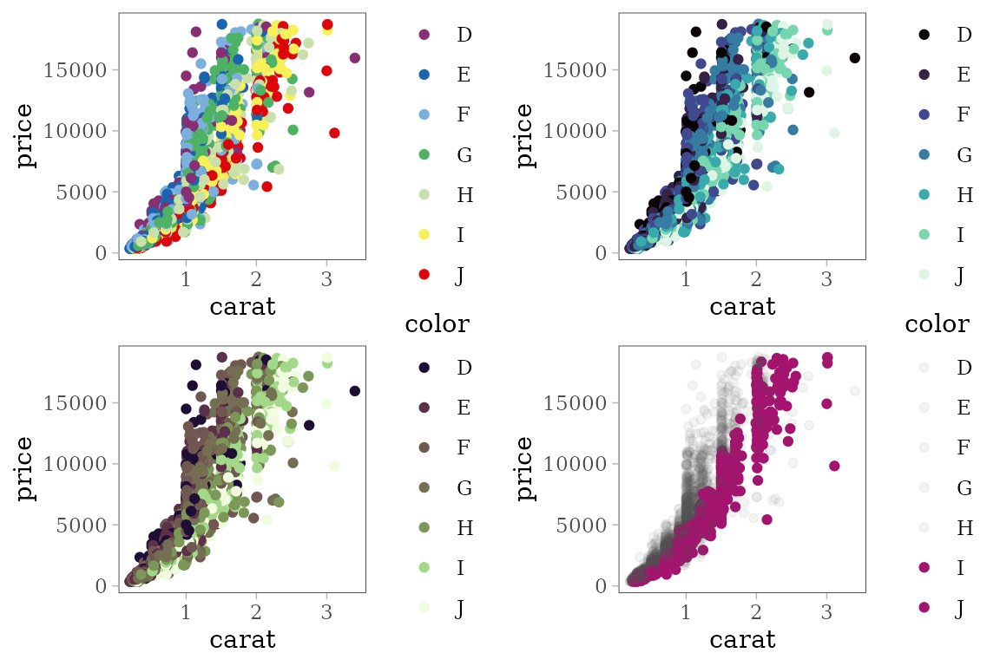
p <- ggplot(dataset) +
geom_histogram(aes(x = carat, fill = cut), bins = 20)
grid.arrange(
p + scale_fill_theme("muted_r"),
p + scale_fill_theme("khroma/discreterainbow"),
p + scale_fill_theme("mytheme@q"),
p + scale_fill_theme("highlight?which=1:3&accent='maroon'")
)
remove(mytheme, envir = midr:::kernel.env)Pre-defined color themes
The following color themes are available when the midr package is loaded. Some themes depend on other packages being installed, so for full functionality, please ensure you have already installed the viridisLite, RColorBrewer, and khroma packages.
.df <- color.theme.info()


 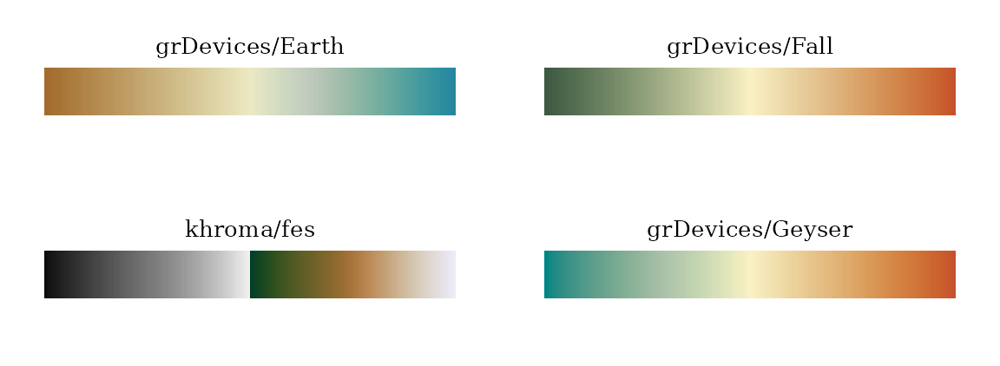
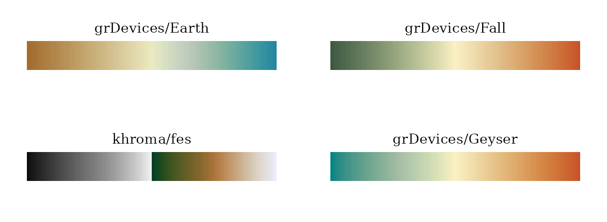
 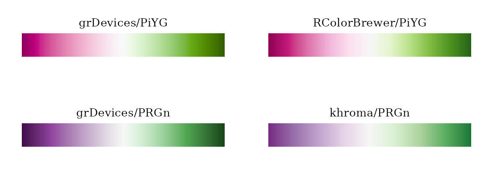
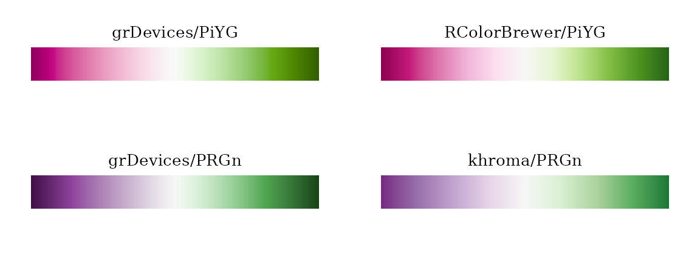 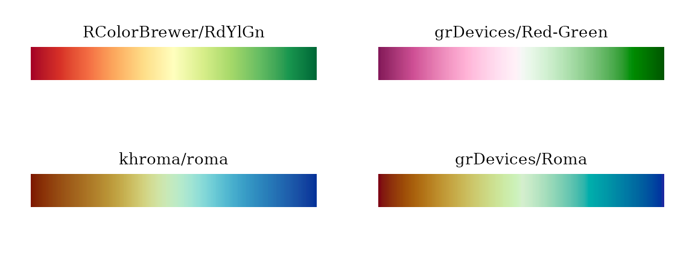
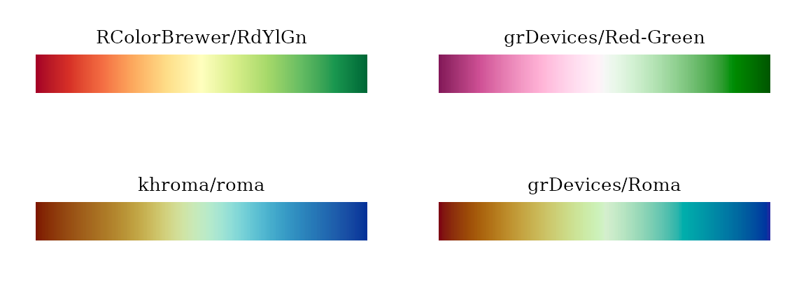


 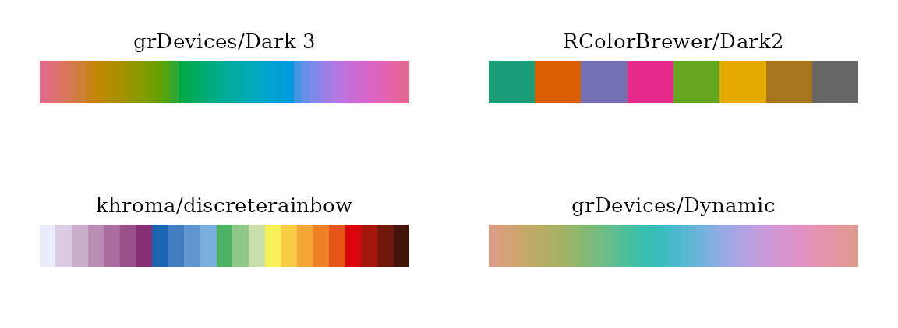
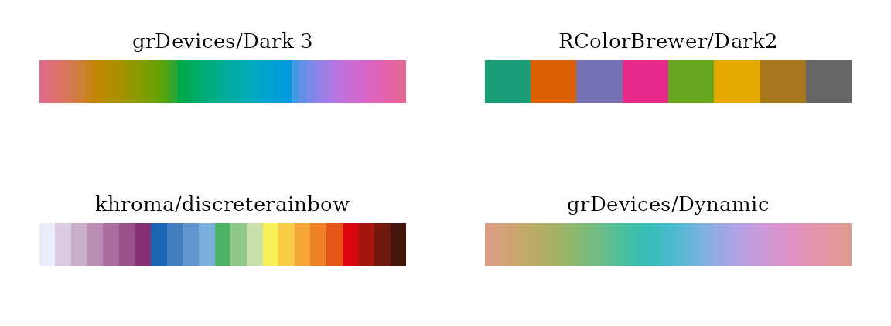
 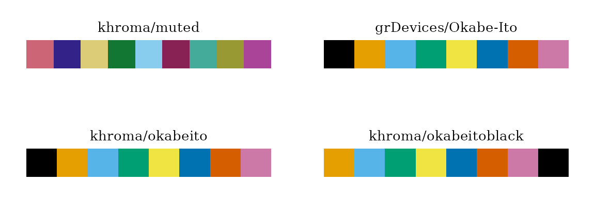
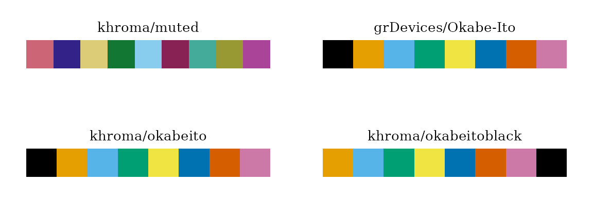


 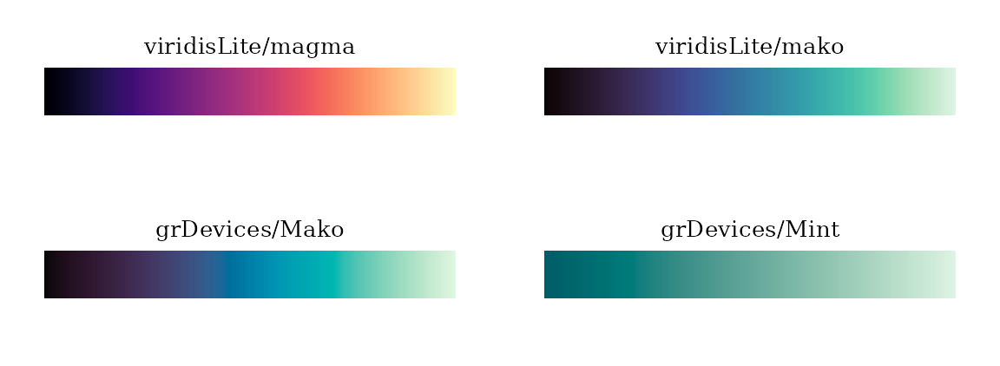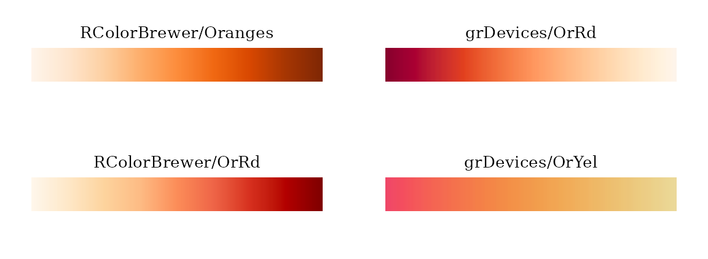
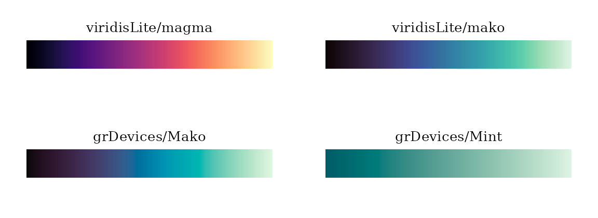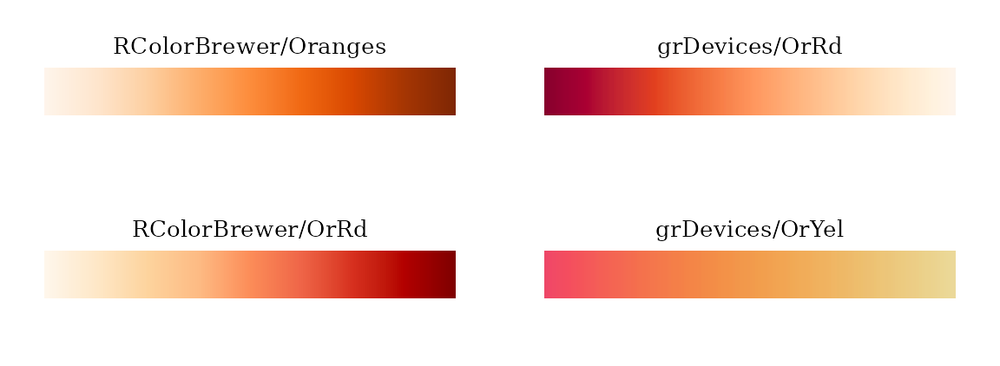


 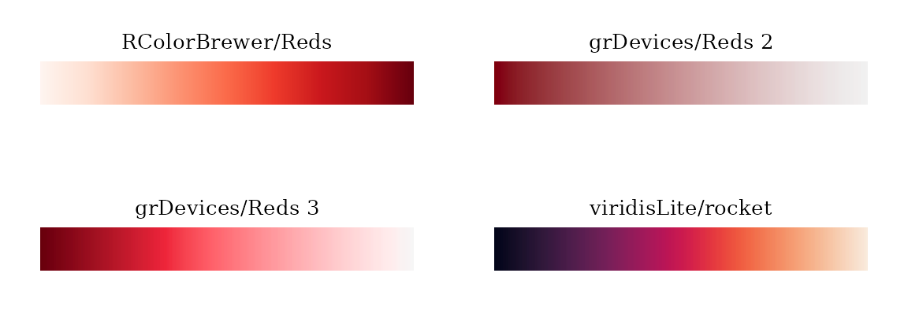
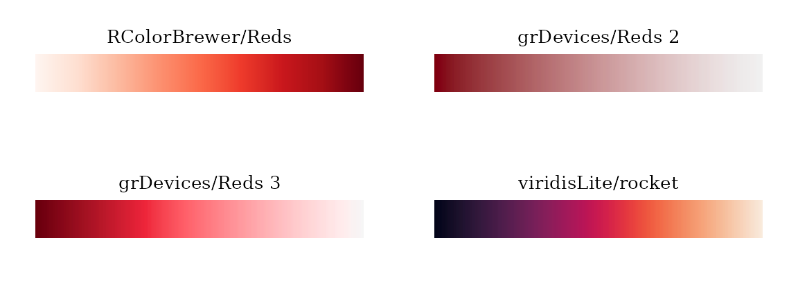